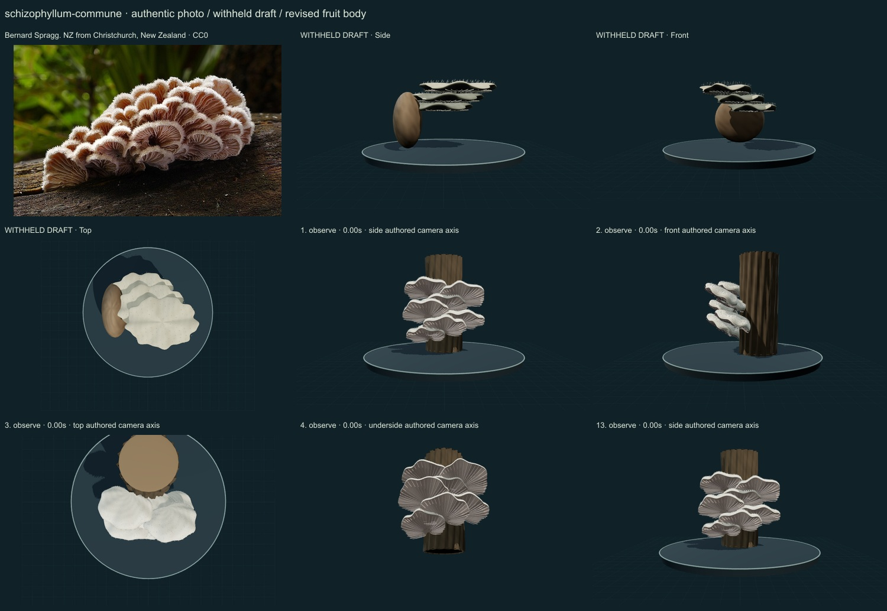
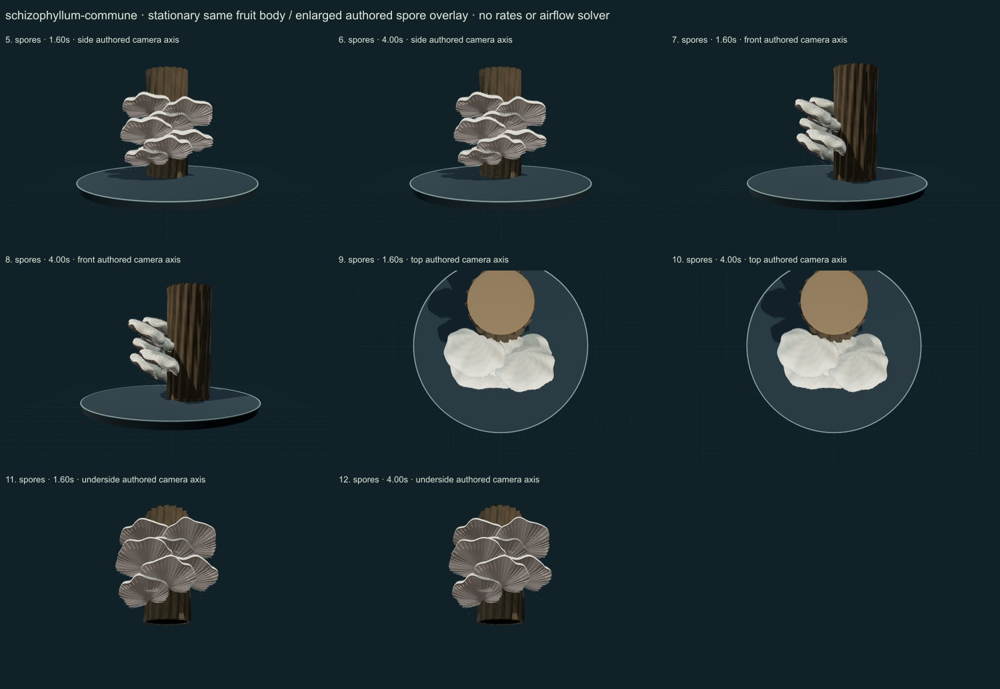

PhenoVoxel Archive · v0.6.25 · October25,2026
Splitgill
293 records after verified publication. Seven saved drafts held;257 missing to550, including250 without drafts. Release register.
Actual Bernard Spragg NZ photograph and selected Adelaide description compared. Selected review text/caption discusses moisture response; its reprinted figure was not redistributed or used as a photographic asset. Macro appearance alone does not resolve cryptic lineages.
Bernard Spragg. NZ from Christchurch, New Zealand · CC0. Source-labelled real organism reference; preparation, life-stage, location and selected phenotype do not establish all species variation or measured 3D anatomy. Resized inside 1000 px, flattened and JPEG encoded; no generative alteration.
Exact creator, source/license links and original/derivative checksums are retained in the linked data. The2025 Hericium paper is linked as a scholarly reference; its NC-ND figures are not reused. Additional copyrighted treatments/figures are not redistributed or sampled into material textures.
Selected laterally attached shell-like bodies expose paired radial split pseudolamellar folds beneath thin hairy caps. The woody orientation is a selected contextual study, not the photographed individual.
Pale densely modeled hairs, lighter margins and pinkish-grey paired lower folds replace blank dark undersides. Original relief and pigment are retained across actions.
Remaining: The seven cap arrangement is more regular and less crowded than the photograph. Fine split-fold edges, branching/anastomosis, hyphal hairs and tissue optics are incomplete. No measured moisture response or independent lineage identification.
Stationary same fruit bodies with an enlarged authored spore overlay. Moisture-induced enrollment and gill splitting are biological context only; no working hygroscopic mechanics are claimed.
Partly stylized, unmeasured original educational reconstructions. Fine anatomy, age variation, tissue optics, dimensions and physiology remain incomplete. Enlarged spore dots are a teaching overlay with authored timing, not measured release, Buller-drop mechanics or an airflow solver. No independent specialist validation, scientific certification or accuracy percentage.
The underside camera temporarily hides contextual platform/grid. Contextual wood is authored support artwork, not a scanned host or proof of host specificity.
13 actual final nonblank main-viewer states individually inspected on two labelled sheets, with authentic photograph and withheld-draft comparison. Whole-body side/front/top, unobstructed underside and two representative overlay times per axis; qualitative author assessment, not independent specialist review.


Partly stylized, unmeasured original educational reconstructions. Fine anatomy, age variation, tissue optics, dimensions and physiology remain incomplete. Enlarged spore dots are a teaching overlay with authored timing, not measured release, Buller-drop mechanics or an airflow solver. No independent specialist validation, scientific certification or accuracy percentage. Prior285 species objects, including credited wolf/tiger meshes, are unchanged. Species-complex caveats remain visible. Recorded occurrences are not native ranges; legacy Protista/Monera are reporting conveniences.
Original geometry/controller MIT. Authentic photo portions retain the exact credited license; model-only frames contain original rendered geometry.
Exact findings, source scopes and screenshot hashes_(33389628036).jpg){kind=link}